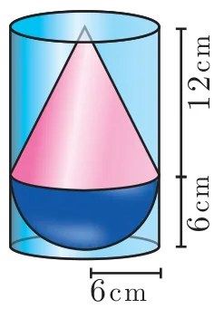
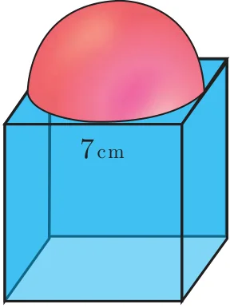

- A vessel is in the form of a hemispherical bowl mounted by a hollow cylinder. The diameter is 14 cm and the height of the vessel is 13 cm. Find the capacity of the vessel.
- Nathan, an engineering student was asked to make a model shaped like a cylinder with two cones attached at its two ends. The diameter of the model is 3 cm and its length is 12 cm. If each cone has a height of 2 cm, find the volume of the model that Nathan made.
- From a solid cylinder whose height is 2.4 cm and the diameter 1.4 cm, a cone of the same height and same diameter is carved out. Find the volume of the remaining solid to the nearest \(cm^3\).
- A solid consisting of a right circular cone of height 12 cm and radius 6 cm standing on a hemisphere of radius 6 cm is placed upright in a right circular cylinder full of water such that it touches the bottom. Find the volume of the water displaced out of the cylinder, if the radius of the cylinder is 6 cm and height is 18 cm.

- A capsule is in the shape of a cylinder with two hemisphere stuck to each of its ends. If the length of the entire capsule is 12 mm and the diameter of the capsule is 3 mm, how much medicine it can hold?
- As shown in figure a cubical block of side 7 cm is surmounted by a hemisphere. Find the surface area of the solid.

- A right circular cylinder just enclose a sphere of radius \(r\) units. Calculate
- the surface area of the sphere
- the curved surface area of the cylinder
- the ratio of the areas obtained in (i) and (ii).